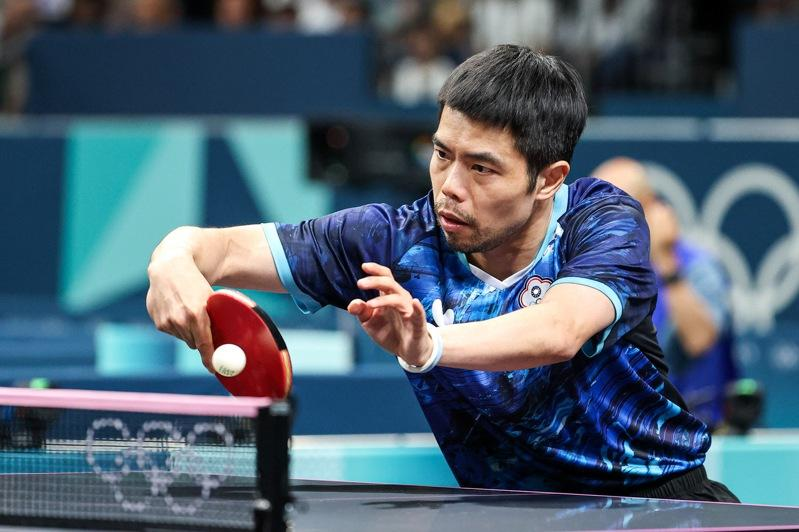
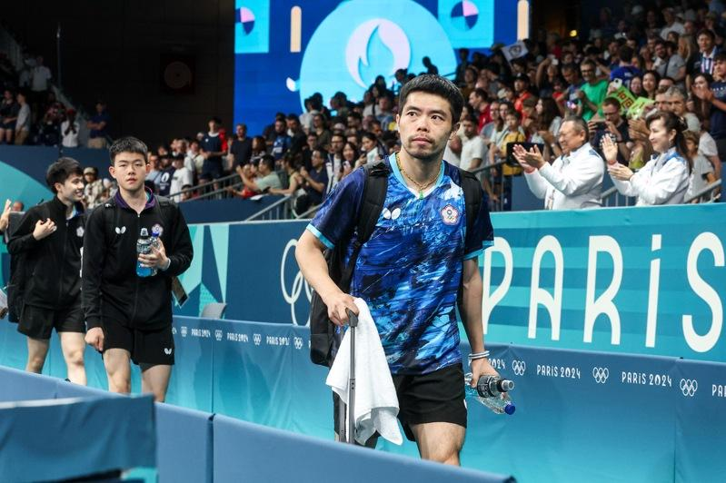

中华桌球队43岁老将庄智渊确定不再打奥运，巴黎奥运桌球赛男子团体8强赛不敌日本，成为这位「六朝元老」生涯在奥运最后一战，他说：「基本上就是最后一届了，我是真的想要做其他事，加上现在有家庭、有小孩，其实一直有很多事情想做。」
庄智渊2004年雅典奥运起步，历经北京、伦敦、里约、东京，今年在巴黎结束，从23岁拚到43岁，今天男团8强赛以1：3不敌日本队，确定是奥运最后一战；这场比赛结束后，中华队正要离场，大会播报用英文简单介绍成员，庄智渊的名字也被念到，现场观众纷纷起身报以热烈掌声。
「我很开心，不只为我欢呼，大家都很热情。」庄智渊说，不知道现场台湾人这么多，有点像在主场打球，体育能让大家的心在一起，「台湾是很好的地方，大家一起加油，让这块土地更好。」
庄智渊确定今年高挂球鞋，只剩几场俱乐部的比赛要打，他说：「以后想做跟台湾体育和桌球有关的事，包括办一些比赛，会跟长辈讨论方式，但更多会是自己主导。」
庄智渊认为，公家单位有行政上的困难，自己做事自由度较大，可以带动风气，喜欢才做，就跟打球一样。
中华队19岁小将高承睿是庄智渊的徒弟，两人在8强赛搭挡双打，庄智渊表示，打球从来不会看成绩，希望他们打出状态，可以跟世界接轨就行，包含有没有打出自己的东西。
庄智渊说：「我没这么伟大，自己也从指导中学到很多东西，从他们的角度去看事情，也会去问他们，所以一般都是讨论和沟通。」
中华队止步8强，高承睿输掉第3点单打，赛后觉得很自责；他表示，对庄智渊比较抱歉，当时是1：1（点数）的局面，如果能够拿下来，后面肯定很有机会。

巴黎奥运热话题
- 乒乓／台湾男团不敌日本止步8强 庄智渊奥运之旅结束
- 法撑竿跳选手下体打落横杆出局 引来色情网站开价
- 全红婵丑拖鞋、黄雨婷发夹卖翻 有商家2天接60万个订单
- 日本羽球女神红了 志田千阳被挖角进演艺圈
- 「美到像AI」匈牙利21岁女剑客脱下面罩惊艳全场